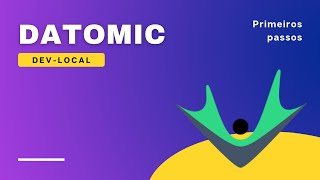
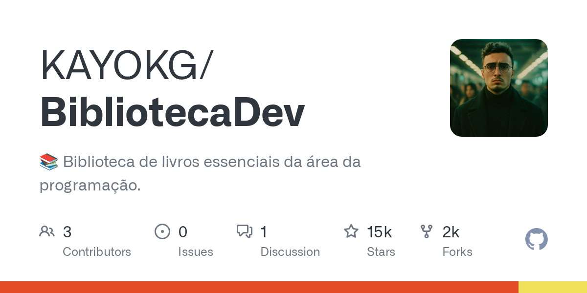
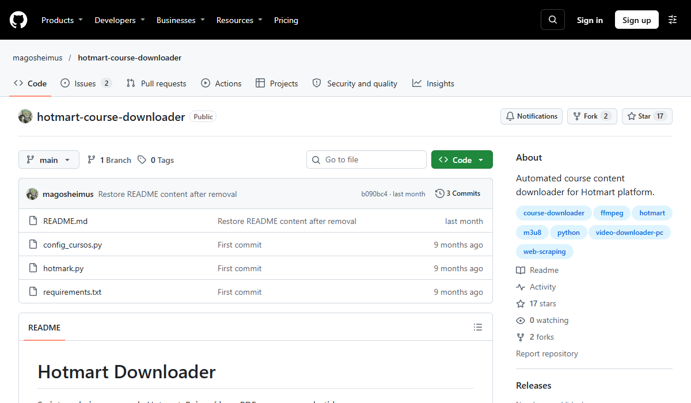
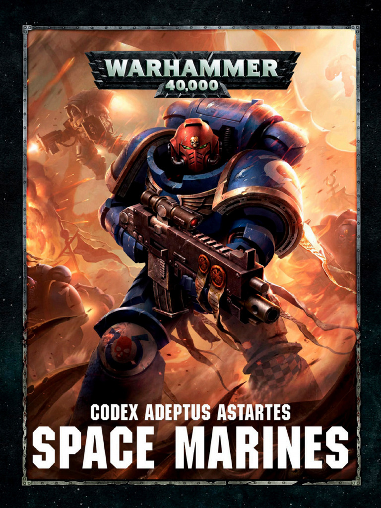

Estudos & livros
Bibliotecas de programação para estudar.
9 links
| Vídeo | Projeto | O que faz | Pasta de origem | |
|---|---|---|---|---|
 #001 - [Datomic] Primeiros passos utilizando a b |  | KAYOKG/BibliotecaDev | Biblioteca de livros de programação em PDF. | UNOPAR-CPET-UDEMY-ONEBITCODE / BIBLIOTECAS DE LIVROS PDS |
| sem vídeo |  | magosheimus/hotmart-course-downloader | Baixa cursos da Hotmart automaticamente (m3u8 + ffmpeg). | curado — busca na internet |
| sem vídeo |  | Lexicanum — The Horus Heresy: Siege of Terra | Wiki do WH40k: sinopse, livros e cronologia do Cerco de Terra. | Estudos & livros |
| sem vídeo | Arquivo — The Horus Heresy: Siege of Terra | Espelho do pacote completo da saga no Internet Archive. | Estudos & livros | |
| sem vídeo |  | Internet Archive — pasta da coleção | Download direto de todos os arquivos da coleção. | Estudos & livros |
| sem vídeo |  | PDF — [THH] 19 Know no Fear | Livro 19 da série, em PDF direto do Internet Archive. | Estudos & livros |
| sem vídeo |  | Scribd — Codex Astartes (traduzido) | Codex Astartes em português no Scribd. | Estudos & livros |
| sem vídeo | Google Drive — pasta da coleção (Horus Heresy) | Pasta no Drive com os arquivos da coleção do Cerco de Terra. | Estudos & livros | |
| sem vídeo |  | Archive — [PRI] 1 - Roboute Guilliman | Volume Primarchs 1 (Roboute Guilliman) na coleção do Cerco de Terra. | Estudos & livros |